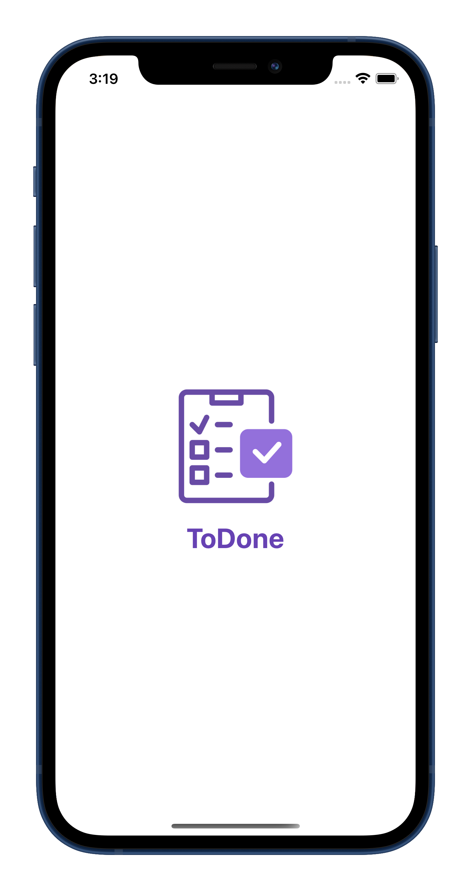

ToDone in action
Let's see ToDone live demo. A quick and easy guide tour to all of it's basic function and features. Click at the link below to download ToDone now !

see video
A better way to organize your task in daily life. ToDone helps user create and save task on their phone without the need of internet connection.
User can simply typing the task and make a todo list. When the task is done simply tap to add check mark to the task or remove it by swipe to the right. User can also search the task they want to find by typing at the search bar at the top. The app provides simple interface to add task and organize those tasks by adding it to seperate categories.

The following are the tools and frameworks used to develop this
application.
The app's user interface are made using UIKit. The main apple's
framework used to create user interface for iOS.
The app save and persist those tasks on a device by using
CoreData, an object graph and data persistence apple's framework.
CoreData helps save application’s permanent data for offline use.


Let's see ToDone live demo. A quick and easy guide tour to all of it's basic function and features. Click at the link below to download ToDone now !

Let's contribute to ToDone project. It is a great way of developing quality apps by working together with other developers. Let's create code that benefits the community.